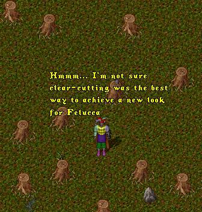
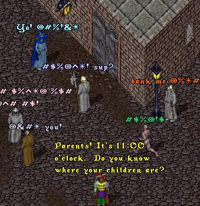
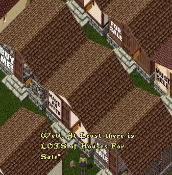
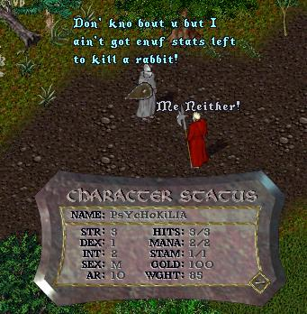
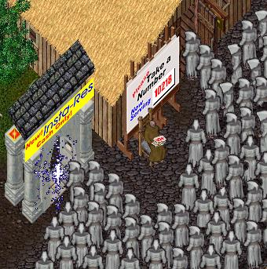

Headline Felucca - OSI is planning changes to the
landscape that will give Felucca it's own special look.
 |
Headline Felucca - OSI has indicated that some
tweaking may be necessary to the translation server
to handle the new official language of Felucca.
 |
Headline Felucca - On the bright side, with the mass
exodus to Trammel, the availability of affordable
housing in Felucca has increased dramatically.
 |
Headline Felucca - Changes in the basic playstyle
has created fears that the current stat-loss
provisions my inconvenience some players.
 |
Headline Felucca - Even with the addition of the new
ARM's (Automatic Res Machines), players may
experience some delays at the healers.
 |